Wolf: alpha-only targeted edit verified; remaining artifacts need review. F1: source-native256px and128px comparisons; PPU/Grid/Collider and wheelchair clearance not tested.
Wolf_128px_BattleSlot_BeforeAfter.png
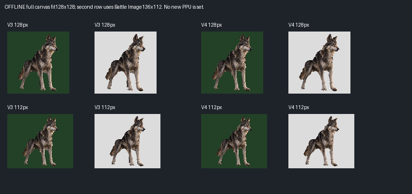
Wolf_Chest_BeforeAfter.png
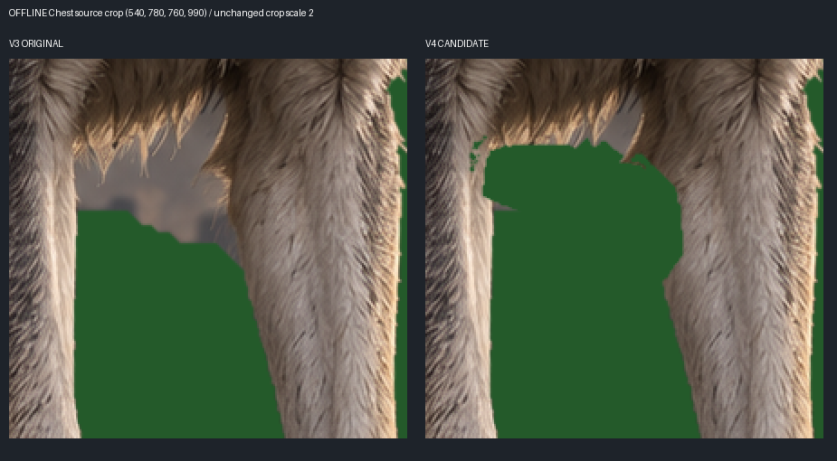
Wolf_HindLeg_BeforeAfter.png
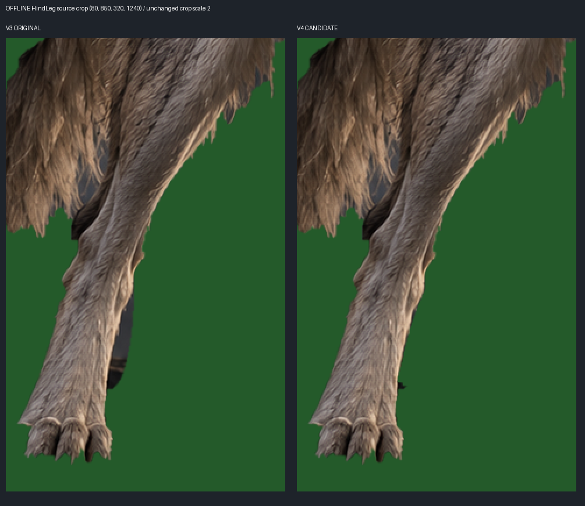
Wolf_Paws_BeforeAfter.png
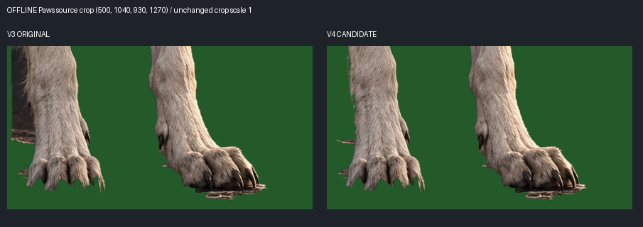
Wolf_RemainingArtifacts_Coordinates.png
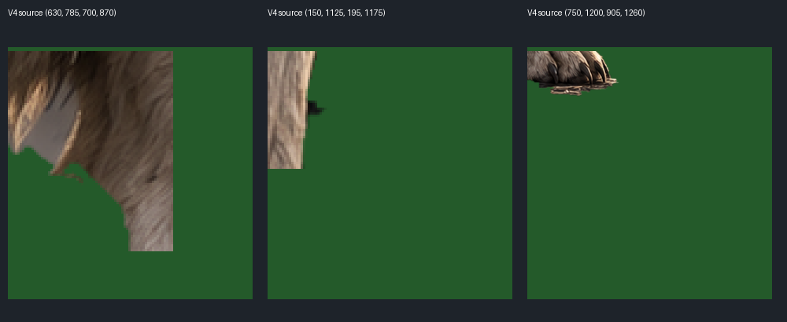
F1_Grounds_BeforeAfter.png
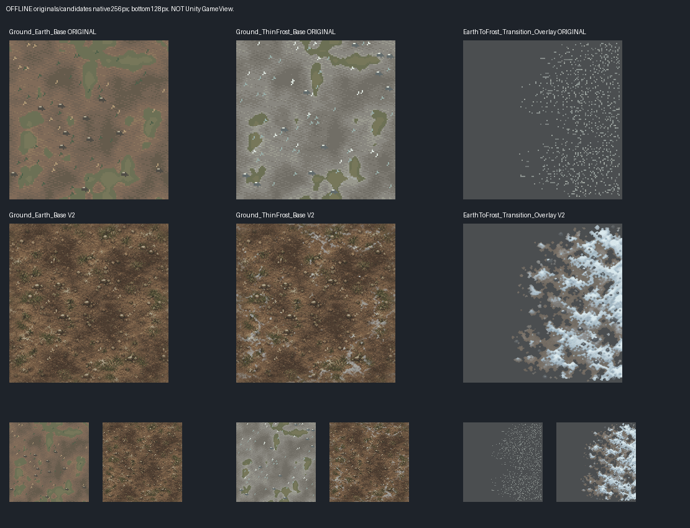
F1_PathProps_BeforeAfter.png
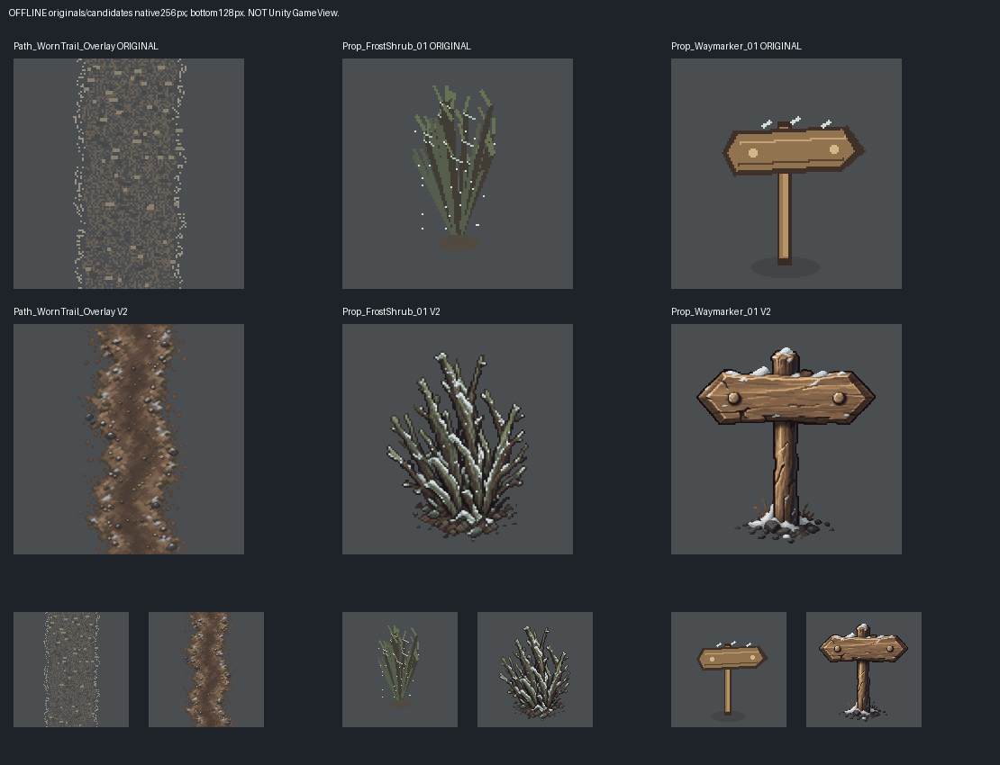
Ground_Earth_Base_Repeat3x3.png
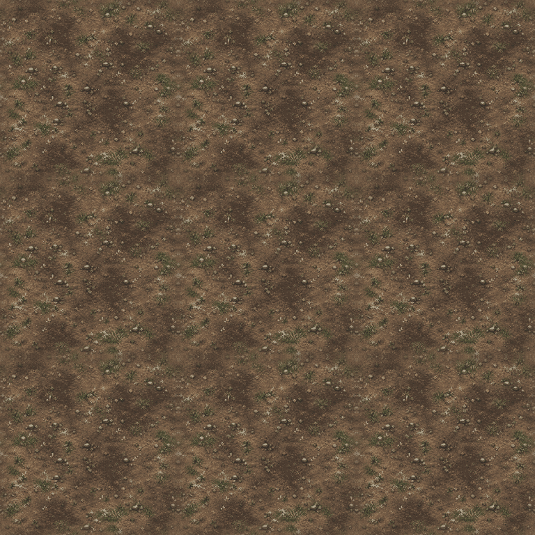
Ground_ThinFrost_Base_Repeat3x3.png
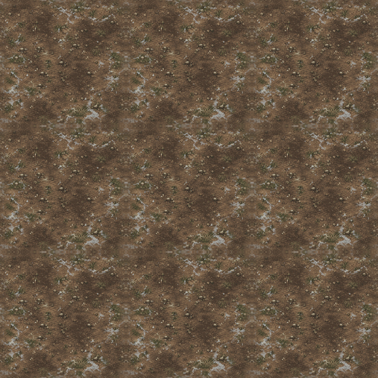
F1_Transition_Path_Delta.png
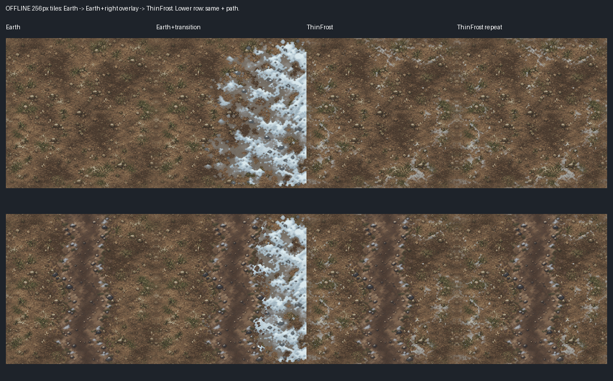
F1_Props_OnEarth_256px.png
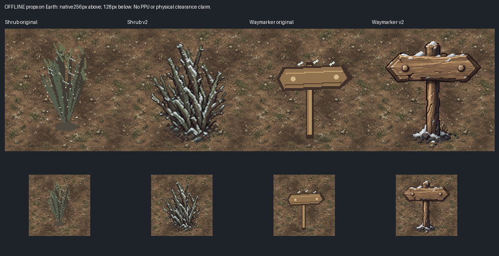
F1_Ch2_Material_Comparison_Offline.png
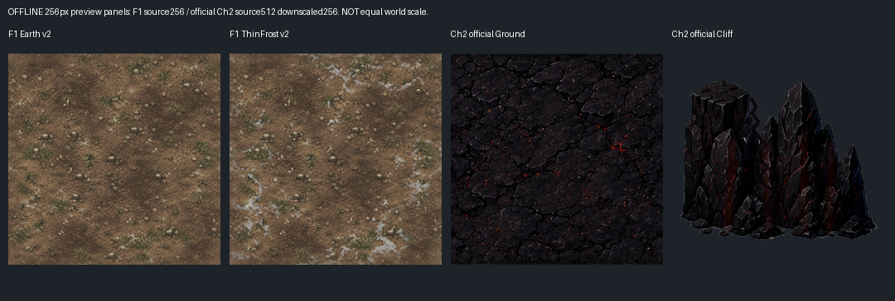